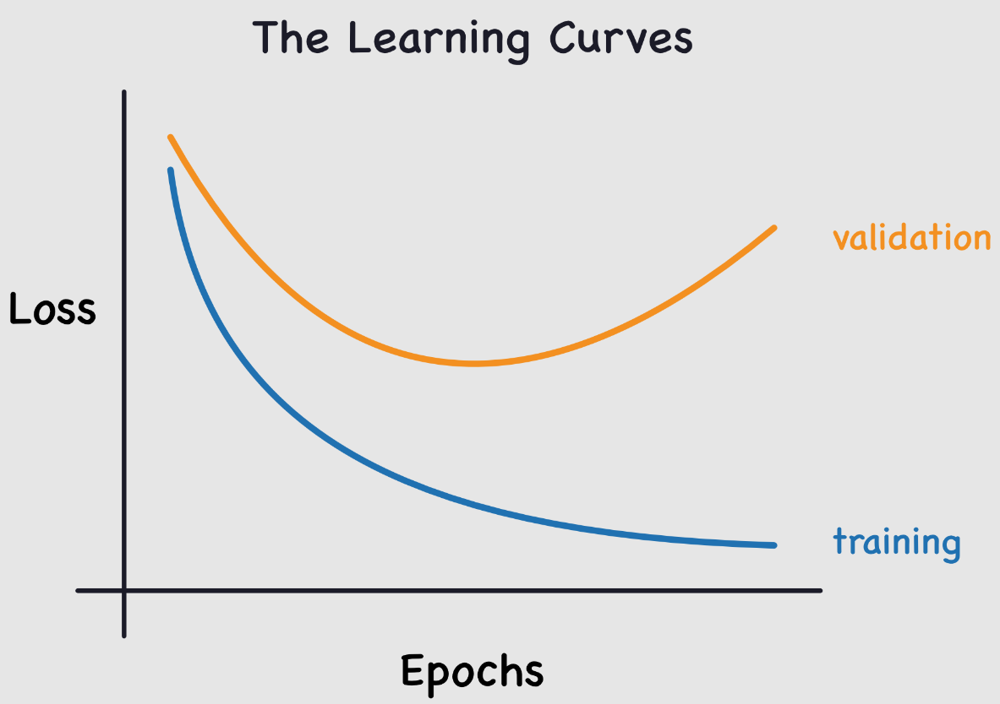

Regularization#
In this deep learning course, we’ve seen that neural networks are very effective at solving various problems. However, some major issues limit their potential. Today, we’ll discuss overfitting.
Overfitting occurs when the model adapts too precisely to the training data, even capturing anomalies and noise. As a result, its performance on test data is poor.

This problem is common when training neural networks. To monitor it, we use a validation dataset that we regularly evaluate to ensure the loss is decreasing. In case of overfitting, the training and validation loss curves look like this:

The training loss continues to decrease, while the validation loss increases. This shows that the model is learning the specifics of the training data, which is the opposite of what we want.
Thinking about it, it makes sense: the model tries to minimize the loss on the training data.
This is a crucial point to consider when training a neural network. To combat this problem, several techniques exist. We’ll present two here, trying to understand why they work.
These two methods are L2 regularization and dropout. This notebook is inspired by the fastai course.
L2 Regularization#
L2 regularization is a simple technique. It involves adding the sum of the squared weights to the loss function (with a factor \(wd\) called weight_decay). This term in the loss function encourages the weights to be as small as possible.
Why does this reduce overfitting?#
Intuitively, larger weights can create steeper slopes in the loss function.
To confirm this intuition, let’s look at what happens with the parabola function: \(y=a \times x^2\)
import numpy as np
import matplotlib.pyplot as plt
x = np.linspace(-2,2,100)
a_s = [1,2,5,10,50]
ys = [a * x**2 for a in a_s]
_,ax = plt.subplots(figsize=(6,4))
for a,y in zip(a_s,ys): ax.plot(x,y, label=f'a={a}')
ax.set_ylim([0,5])
ax.legend();

The larger \(a\) becomes, the steeper the parabola becomes. If we compare \(a\) to our weights, we can imagine that large weights lead to a function represented by a network with abrupt changes, which can correspond to overfitting.
This justification may seem a bit “magical,” but in practice, L2 regularization really has a positive impact on preventing overfitting.
Limiting the value of the weights also reduces the network’s learning capacity. However, this limitation allows for better generalization and avoids overfitting.
Method Implementation#
To implement L2 regularization, you can do it manually by adding the term to our loss:
\(L(w) = L_0(w) + wd \sum_{i=1}^{n} w_i^2\) where \(L(w)\) is the regularized loss, \(L_0(w)\) is the classic loss function, \(wd\) (weight_decay) is the regularization coefficient, and \(w_i\) is a weight of the model.
or loss_regu = loss + wd * (parameters**2).sum() in Python.
More simply, you can use L2 regularization in PyTorch by adding the weight_decay parameter during the optimizer initialization (default is 0). For example:
import torch
params=torch.tensor([1.0], requires_grad=True)
# Pour SGD
torch.nn.optim.SGD(params, lr=0.1, weight_decay=0.1)
# Pour Adam
torch.nn.optim.Adam(params, lr=0.1, weight_decay=0.1)
If your model has overfitting issues, this is a method to try!
Dropout#
Dropout is a regularization method introduced in the paper Improving neural networks by preventing co-adaptation of feature detectors. The idea is simple: at each training step, a random subset of the network’s activations is set to zero. Thus, each neuron becomes necessary to produce a consistent output from the input.

Intuition#
To understand dropout, we can use a metaphor from the author of the paper (Geoffrey Hinton):
“I went to my bank. The tellers were constantly changing, and I asked one of them why. He said he didn’t know, but they were often moved around. I thought this must be because it would require cooperation among the employees to set up a bank fraud, and thus it greatly limits the possibilities of doing so. This made me realize that randomly removing a different subset of neurons for each example would prevent conspiracies and thus reduce overfitting.”
This prevents neurons from “cheating,” i.e., finding a fraudulent shortcut for a prediction (one might assume that each neuron relies on a detail of the input solely to make its prediction).
This method encourages neurons to cooperate and increases noise in the activations, leading to a more robust model. We can also see dropout as a blend of many small models that cooperate during the testing phase.
Implementation#
You can implement dropout in Python like this:
import torch.nn as nn
class Dropout(nn.Module):
def __init__(self, p):
self.p = p
def forward(self, x):
# Le droupout n'est appliqué que pendant l'entrainement
if not self.training:
return x
# On crée un masque de dropout à partir d'une distribution de Bernoulli
mask = torch.zeros_like(x)
mask.bernoulli_(1 - self.p) # chaque élément a une probabilité de 1-p d'être mis à 0 sinon il est mis à 1
# On applique le masque et on divise par 1-p pour garder une moyenne cohérente
return x * mask/(1-self.p)
The layer is also implemented in PyTorch, and you can use it with nn.Dropout(), which takes the parameter \(p\) as the probability that an activation is set to zero.
Note: When using PyTorch’s dropout, be sure to set the model to train mode during training and eval mode during validation/testing (as with batchnorm). You can do this with model.train() and model.eval().